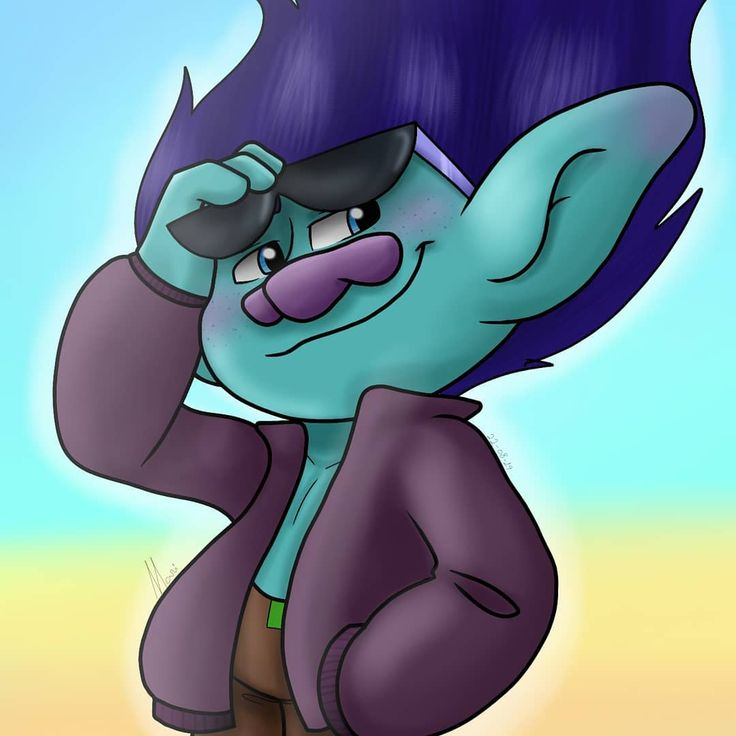
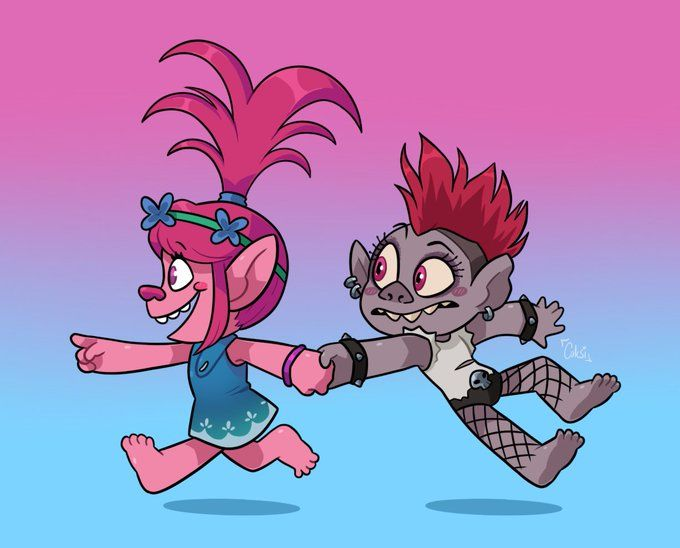

Greetings fellow troll-ees, explore the magical wonderland of trolls
We've been waiting to jam with an internet explorer, such as yourself
Don't be a grump, let's have some fun
Featured Art
 A troll doll is a type of plastic doll with wild, furry hair with the likeness of the smaller woodland trolls (or "mountain-folk", depending on the region) from Scandenavian Folklore.
Other common names are: